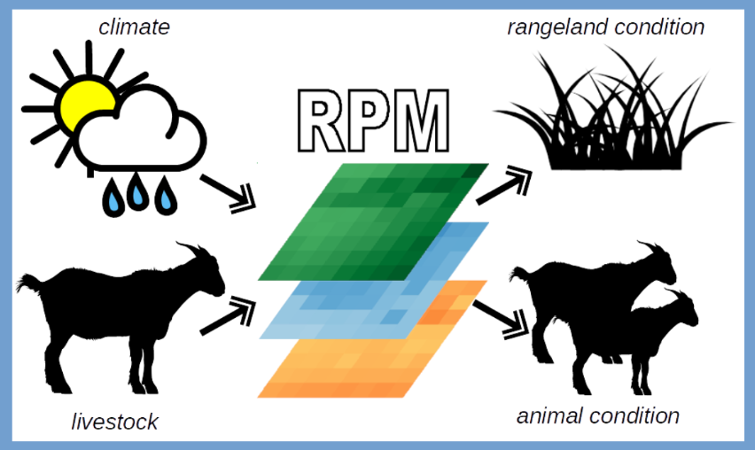

cloud_queue
Why?
Informed management of livestock on rangelands underpins both the livelihoods of communities that depend on livestock for sustenance, and the conservation of wildlife that often depend on livestock-dominated landscapes for habitat. Understanding spatial patterns of rangeland productivity is therefore crucial to designing global development strategies that balance social and environmental benefits.
wifi_tethering
What?
The Rangeland Production Model (RPM) uses gridded climate and soils data to quantify the
productivity of a rangeland area to support ruminant
livestock and wildlife populations. The model uses
a remotely sensed vegetation index to estimate
spatially disaggregated livestock densities at a
monthly timestep by comparing modeled forage
productivity in the absence of grazing to observed
vegetation detected by the remotely sensed index.
With this estimated livestock density and gridded
climate inputs, the model predicts the combined
impacts of livestock management and climate in
controlling rangeland condition and livestock diet
sufficiency.
list
How?

Overview of the main drivers and outputs of the Rangeland Production Model.
Read the complete model documentation here